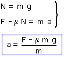
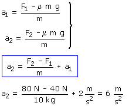

Si el bloque se mueve lo hará en el sentido de F
y por tanto la aceleración
irá en dicho sentido
La fuerza de rozamiento irá hacia la izquierda y valdrá:
μN
|
|
Calculamos la aceleración de un bloque que se mueve sometido a una fuerza F  |

Aplicamos la expresión de la aceleración al caso de fuerzas F1 (40 N) y F2 (80 N)

Observa que con el doble de fuerza no se consigue el doble de aceleración. Esto se debe a que interviene una fuerza más, la de rozamiento